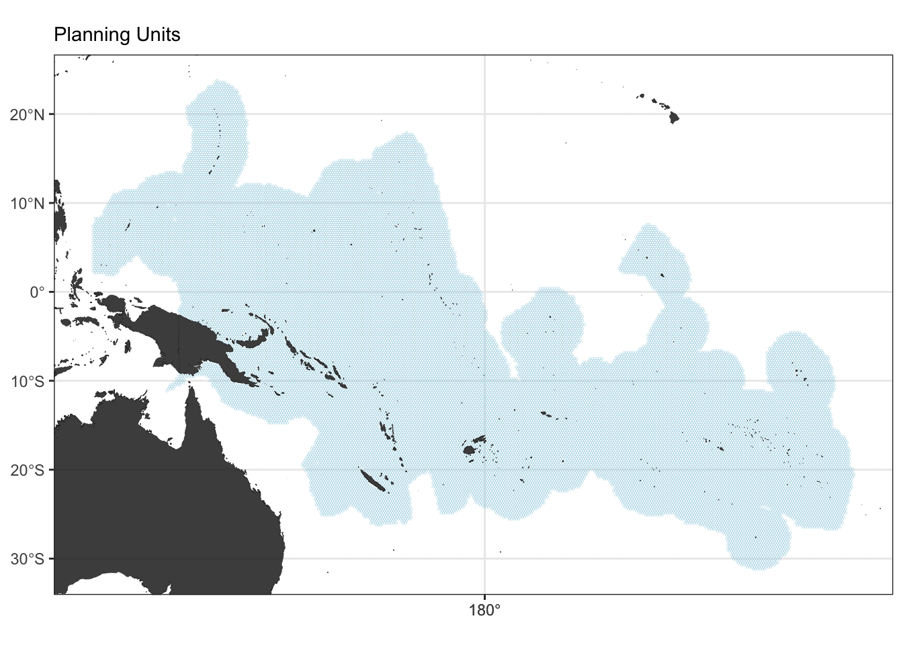
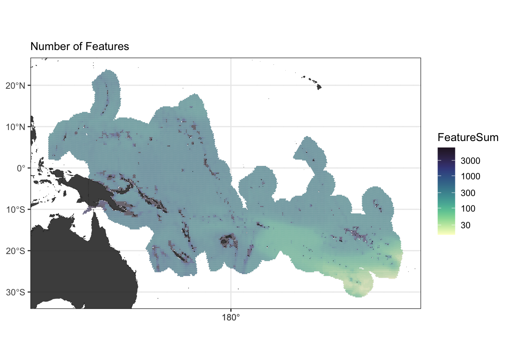
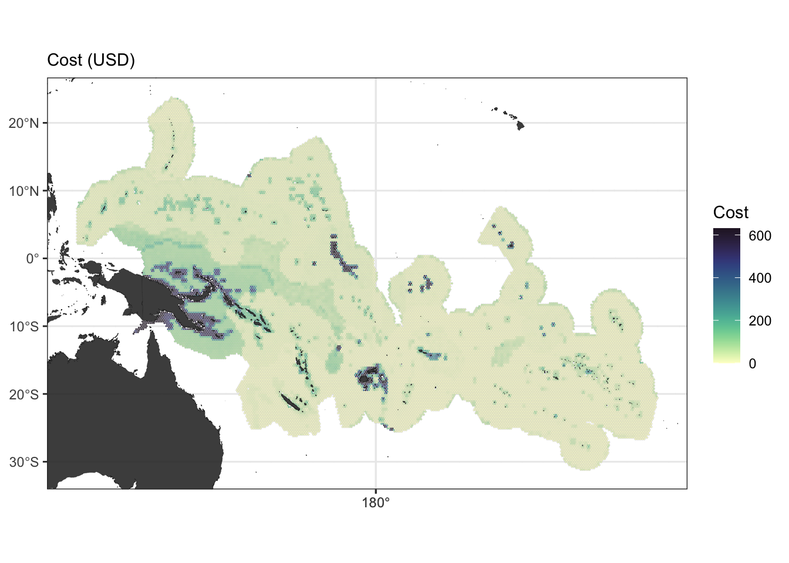
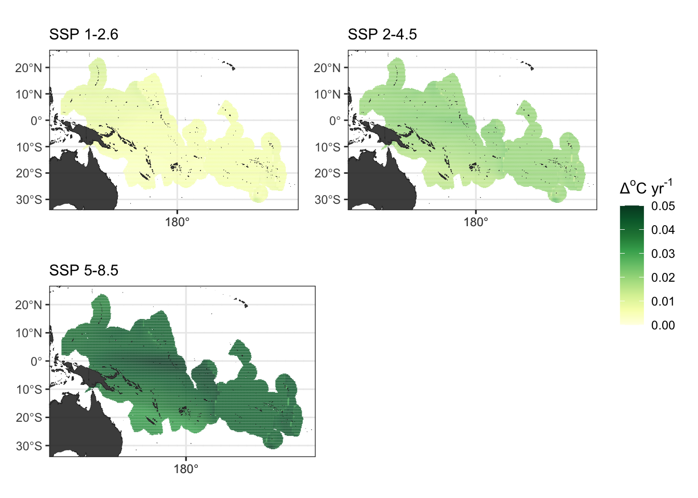
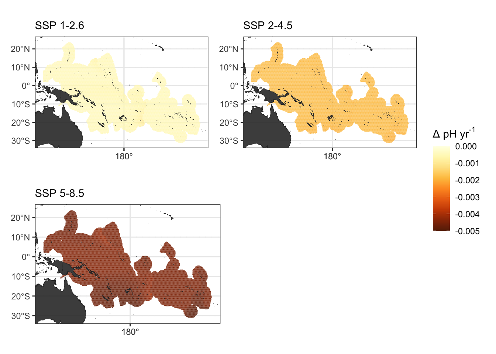

Chapter 2 Preliminaries
To create any spatial design, we need the following:
Planning region
Conservation features each with a representation target
Cost layer
And, since we’re creating climate-smart designs, we also need:
- Climate layers
2.1 Planning Region
We chose the planning region to be the Western Pacific.
(ggPU <- fSpatPlan_PlotPUs(PUs, land))
We used \(0.25^{\circ} x 0.25^{\circ}\) resolution (\(~670 km^2\) per planning unit) and the Robinson projection. The entire planning region yielded a total of 35389 planning units.
2.2 Conservation Features
We used species distribution maps AquaMaps (Kaschner 2019) as the conservation features. We restricted the species considered within the bounds of the planning region, within the epipelagic zone (0-200m depth), and occurring at >= 0.5.
Of the 33,518 species in AquaMaps, we considered 8712 species/features.
For simplicity, we chose to use effective targets of 40% for all runs.
(ggFeatureNo <- fSpatPlan_FeatureNo(aqua_sf, land))## Warning: Transformation introduced infinite values in discrete y-axis
2.3 Cost Layer
To calculate the cost layer, we multiplied the cost per kg (in US$/kg) of each species to their mean catch (in kg) (Watson 2017).
(ggCost <- fSpatPlan_PlotCost(cost, land))
2.4 Climate Layers
We explored 5 climate metrics, each of which was calculated from a multi-model ensemble of projected sea surface temperature, pH, and oxygen concentration.
The ensemble was calculated from 5 GCMs (2015-2100) (CMIP6 2021), namely: 1. Can-ESM5, 2. CMCC-ESM2, 3. GFDL-ESM4, 4. IPSL-CM6A-LR, and 5. NorESM2-MM.
The GCMs used were forced under three climate scenarios: 1. SSP 1-2.6, 2. SSP 2-4.5, and 3. SSP 5-8.5.
The five climate metrics are the following:
Rate of climate warming
Rate of ocean acidification
Rate of declining oxygen concentration
Climate velocity
Mean annual intensity of marine heatwaves
Rates of climate warming, ocean acidification and declining oxygen concentration, and mean annual intensity of MHWs are exposure climate metrics. Climate velocity is a retention climate metric.
2.4.1 Rate of climate warming
(gg_roc_tos_SSP126 + gg_roc_tos_SSP245) / (gg_roc_tos_SSP585 + plot_spacer()) + plot_layout(guides = "collect")
2.4.2 Rate of ocean acidification
(gg_roc_phos_SSP126 + gg_roc_phos_SSP245) / (gg_roc_phos_SSP585 + plot_spacer()) + plot_layout(guides = "collect")